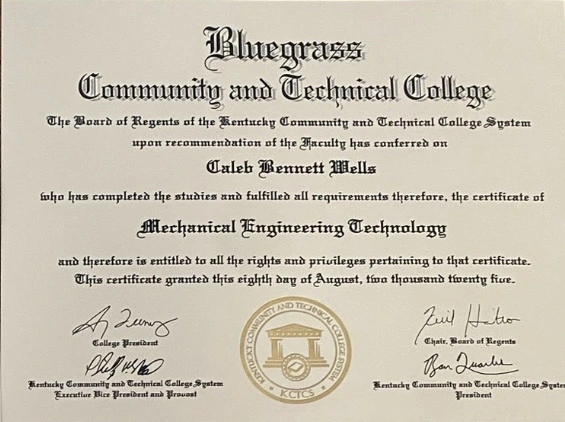
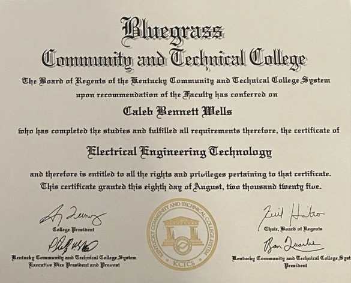
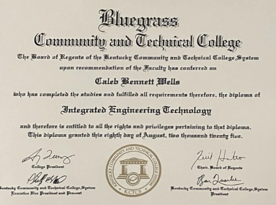
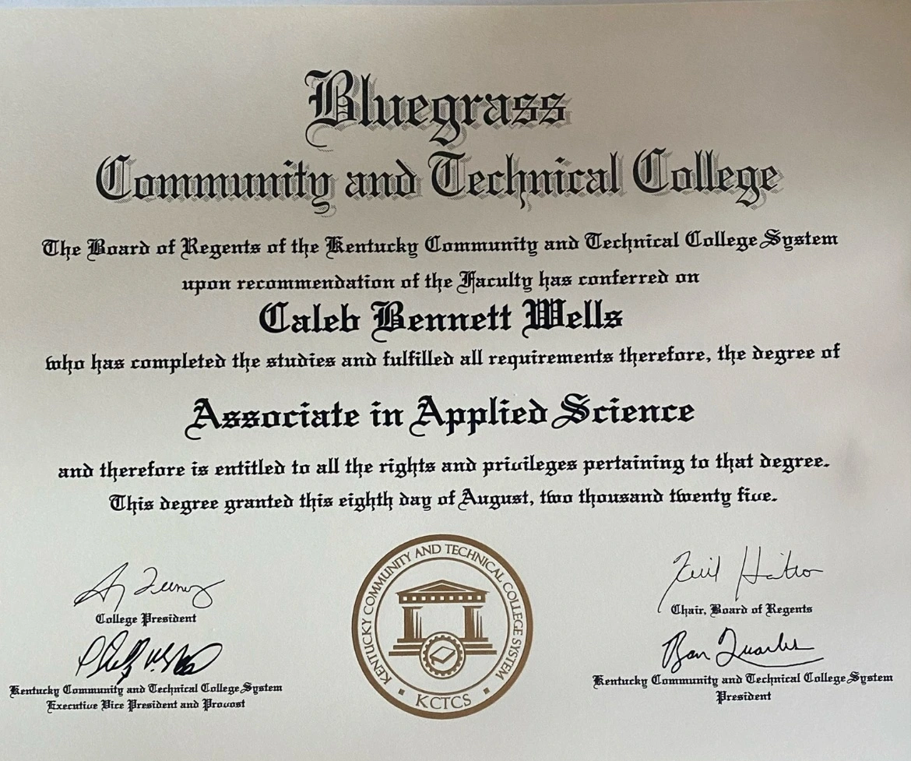

Time Study
Measure work with confidence.Establish reliable cycle times and expose process variation.
Lean Systems · Design · Automation
I'm a Lean Systems Engineering student driven by a passion for creating efficient, practical systems that merge innovation with real-world performance. My work focuses on optimizing processes through automation, lean methodologies, and data-driven design. Whether improving production flow or developing new technologies, I aim to build smarter systems that perform reliably, reduce waste, and drive measurable results across engineering and manufacturing environments.

Core Capabilities
Explore the tools and methods I use to move ideas into production.
Skill Drawer
See the tools, tasks, and strengths behind each area.
Process Improvement
Practical methods used to analyze flow, improve quality, reduce waste, and optimize production.
Measure work with confidence.Establish reliable cycle times and expose process variation.
Balance production flow.Visualize workloads and eliminate bottlenecks across the line.
Match production to demand.Calculate the ideal production pace for customer requirements.
Monitor manufacturing performance.Measure equipment effectiveness through availability, performance, and quality.
Optimize the entire process.Visualize material flow and eliminate non-value-added activities.
Create repeatable processes.Build consistent procedures that improve quality and training.
Solve problems permanently.Identify true causes instead of treating symptoms.
Build efficient workplaces.Create organized, safe, and visually controlled environments.
Resume Snapshot
The training and hands-on roles behind my engineering approach.
Degree programs centered on lean systems, manufacturing technology, and applied engineering.
Hands-on engineering work spanning HVAC design, conveyor systems, documentation, and fabrication support.
Built & Tested
Engineering work that turns requirements into practical results.
Featured projects

HVAC Systems
Parametric models that speed up custom rooftop-unit design and production.

Bulk Handling
A durable chute redesign for smoother flow and less wear.

Factory Proposal
A capacity, layout, and investment plan for factory improvements.
Industrial HVAC Design
Configurator-driven parametric workflow for custom rooftop units.AI Data Center Cooling System Production Line
High-level manufacturing line launch support from design through initial production.Coal Chute Conveyor
Heavy-duty chute redesign with upgraded wear surfaces and smoother flow.Industrial Line Redesign Project
Factory proposal + line-balance package that cut mantel lead time by 66%.Portfolio Website
Responsive site with lean tools, skills drawer, resume tabs, and project links.Home Server
Self-hosted storage, automation hub, and development sandbox.Robot Arm
Custom joints and motion study to practice robotics layouts.Meal Plan Automation Logic
Python workflow that balances macros and schedules weekly prep.Qualifications
Verified academic and professional training.





Start a Conversation
Have a project or opportunity in mind? Send me a note.